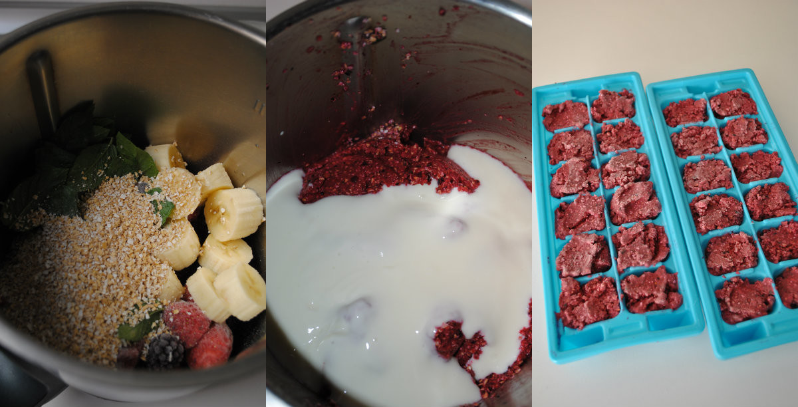

Dificultad: Media
Tiempo total: ......................... 10 min
Elaboración: .......................... 10 min
Reposo: ................................... 2 horas
En un robot de cocina (yo he usado Thermomix, pero sirve cualquier otro robot o batidora potente), trituramos los frutos rojos congelados, el plátano (pelado y troceado), el salvado de avena (o el pan integral) y las hojas de menta fresca (bien lavadas) hasta obtener una masa homogénea y sin tropezones.
Añadimos el yogur natural azucarado y la miel y trituramos de nuevo hasta integrar. Servimos inmediatamente o, si no lo vamos a consumir en el momento, dividimos la mezcla en bandejas para cubitos de hielo y congelamos para triturar de nuevo en el momento en que decidamos consumirlo y en la cantidad deseada.
Este helado fácil de frutos rojos y yogur es un bocado refrescante y original con el que rematar una comida de verano. Debido al salvado de avena, su textura es más compacta que la de un helado tradicional, lo que evita que se derrita con rapidez. Se puede servir tal cual, sobre un cucurucho o entre obleas para helado al estilo sándwich. En este último caso, está delicioso.